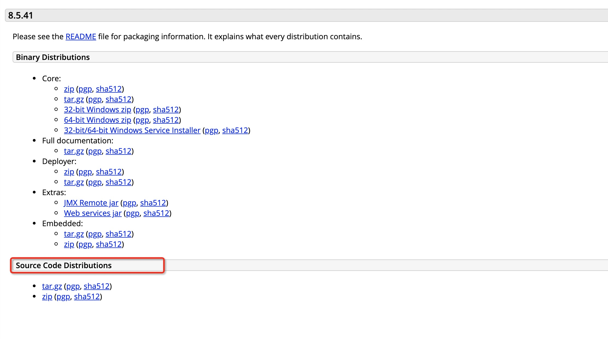
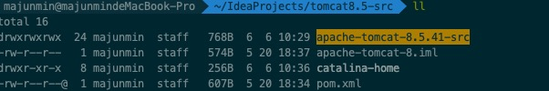
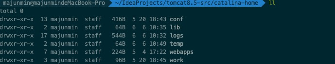
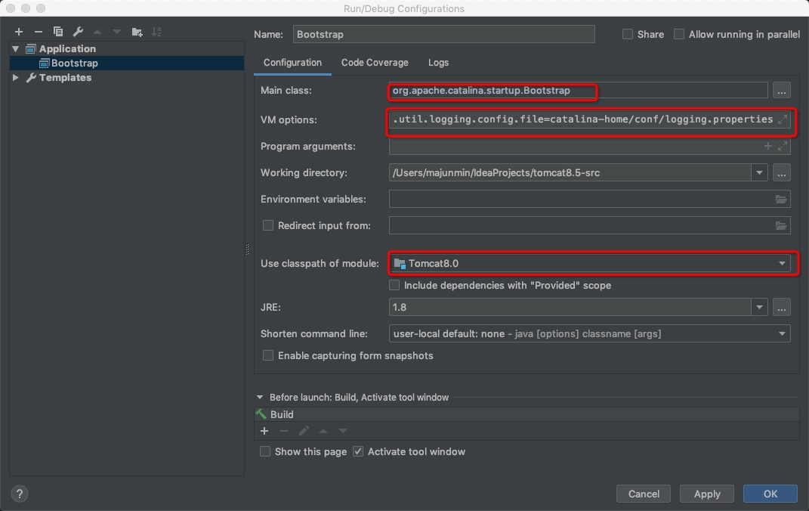
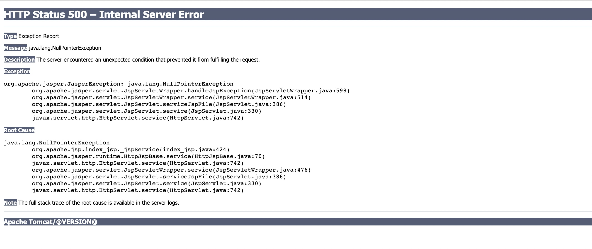
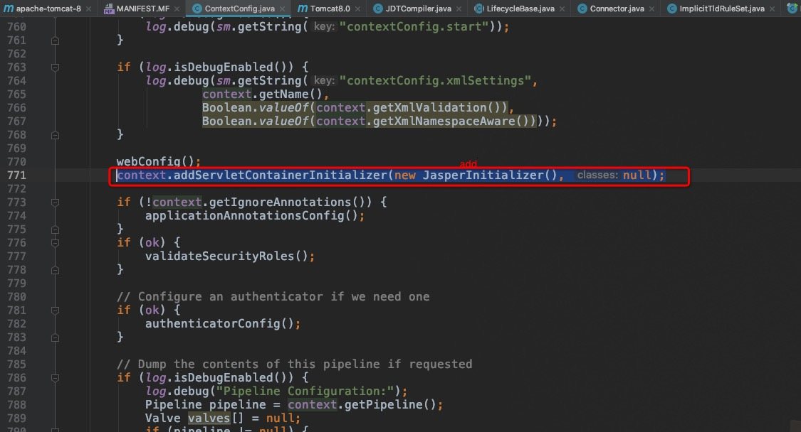

最近有兴趣阅读一下 Tomcat 源码 先把准备工作做一下， 有时间在深入阅读。 嘻嘻
maven tomcat idea
官网下载 Tomcat 源码包
官网 我这里用到的 tomcat 版本是 8.5.41.

项目结构
新建一个 目录 tomcat8.5-src

将源码包解压到该目录下
新建文件pom.xml
新建目录catalina-home, 然后将apache-tomcat-8.5.41-src目录下的conf文件夹拷贝到此处
配置 maven
我们采用module的形式来组织目录
在pom.xml文件中添加内容1
2
3
4
5
6
7
8
9
10
11
12
13
14
15
<project xmlns="http://maven.apache.org/POM/4.0.0" xmlns:xsi="http://www.w3.org/2001/XMLSchema-instance"
xsi:schemaLocation="http://maven.apache.org/POM/4.0.0 http://maven.apache.org/maven-v4_0_0.xsd">
<modelVersion>4.0.0</modelVersion>
<groupId>gxf</groupId>
<artifactId>apache-tomcat-8</artifactId>
<name>apache-tomcat-8-source</name>
<version>1.0</version>
<packaging>pom</packaging>
<modules>
<module>apache-tomcat-8.5.41-src</module>
</modules>
</project>这里主要指定 module 为 Tomcat 的源码目录,然后在
apache-tomcat-8.5.41-src配置 Tomcat 源码依赖，在该目录创建pom.xml1
2
3
4
5
6
7
8
9
10
11
12
13
14
15
16
17
18
19
20
21
22
23
24
25
26
27
28
29
30
31
32
33
34
35
36
37
38
39
40
41
42
43
44
45
46
47
48
49
50
51
52
53
54
55
56
57
58
59
60
61
62
63
64
65
66
67
68
69
70
71
72
73
74
75
76
77
78
79
80
81
82
83
<project xmlns="http://maven.apache.org/POM/4.0.0"
xmlns:xsi="http://www.w3.org/2001/XMLSchema-instance"
xsi:schemaLocation="http://maven.apache.org/POM/4.0.0 http://maven.apache.org/xsd/maven-4.0.0.xsd">
<modelVersion>4.0.0</modelVersion>
<groupId>org.apache.tomcat</groupId>
<artifactId>Tomcat8.0</artifactId>
<name>Tomcat8.0</name>
<version>8.0</version>
<build>
<finalName>Tomcat8.0</finalName>
<sourceDirectory>java</sourceDirectory>
<testSourceDirectory>test</testSourceDirectory>
<resources>
<resource>
<directory>java</directory>
</resource>
</resources>
<testResources>
<testResource>
<directory>test</directory>
</testResource>
</testResources>
<plugins>
<plugin>
<groupId>org.apache.maven.plugins</groupId>
<artifactId>maven-compiler-plugin</artifactId>
<version>3.5.1</version>
<configuration>
<encoding>UTF-8</encoding>
<source>1.8</source>
<target>1.8</target>
</configuration>
</plugin>
<plugin>
<groupId>org.apache.maven.plugins</groupId>
<artifactId>maven-jar-plugin</artifactId>
<version>2.6</version>
</plugin>
</plugins>
</build>
<dependencies>
<dependency>
<groupId>org.easymock</groupId>
<artifactId>easymock</artifactId>
<version>3.5</version>
<scope>test</scope>
</dependency>
<dependency>
<groupId>junit</groupId>
<artifactId>junit</artifactId>
<version>4.12</version>
<scope>test</scope>
</dependency>
<dependency>
<groupId>ant</groupId>
<artifactId>ant</artifactId>
<version>1.7.0</version>
</dependency>
<dependency>
<groupId>wsdl4j</groupId>
<artifactId>wsdl4j</artifactId>
<version>1.6.2</version>
</dependency>
<dependency>
<groupId>javax.xml</groupId>
<artifactId>jaxrpc</artifactId>
<version>1.1</version>
</dependency>
<dependency>
<groupId>org.eclipse.jdt</groupId>
<artifactId>ecj</artifactId>
<version>3.13.102</version>
</dependency>
</dependencies>
</project>到此 Tomcat 源码的基本结构已经搭建完成
构建准备
打开 Idea, 直接带开项目，定位到 tomcat8.5-src 目录
便已配置环境，如果编译的时候 测试代码报错， 直接将 测试代码注释就好
这里将 TestCookieFilter.java 注释了

- 打开项目的Run/Debug配置界面，Main class设置为org.apache.catalina.startup.Bootstrap
- 添加VM options
1
2
3
4
5
6-Dcatalina.home=catalina-home
-Dcatalina.base=catalina-home
-Djava.endorsed.dirs=catalina-home/endorsed
-Djava.io.tmpdir=catalina-home/temp
-Djava.util.logging.manager=org.apache.juli.ClassLoaderLogManager
-Djava.util.logging.config.file=catalina-home/conf/logging.properties - 选择module为Tomcat8.0（源码所在的module）
- 点击Debug按钮启动程序
运行项目
当运行项目后 访问地址 http://localhost:8080
会报 NPE

原因是我们直接启动org.apache.catalina.startup.Bootstrap的时候没有加载org.apache.jasper.servlet.JasperInitializer，从而无法编译JSP。这在Tomcat6/7是没有这个问题的。解决办法是在tomcat的源码org.apache.catalina.startup.ContextConfig中手动将JSP解析器初始化：
1 | context.addServletContainerInitializer(new JasperInitializer(), null); |

至此，我们可以将项目直接放到Tomcat来启动调试了。